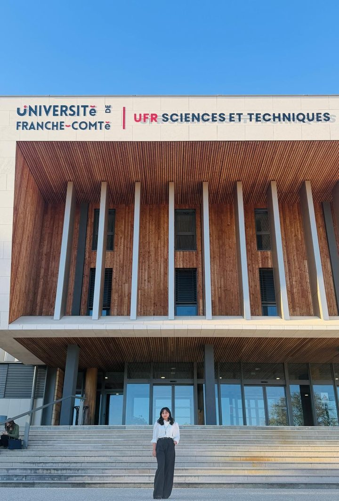

Sept 2026 – present
M1 Computer Science
Université Marie et Louis Pasteur · Besançon, France- Full Excellence Scholarship
- Track: Software & Systems Engineering
- Research project at the FEMTO-ST Institute on generative AI for synthetic mobility data
- Team projects in Agile sprints (Jira, GitLab CI/CD, SonarQube): a compiler and virtual machine, a graph algorithms project and a game